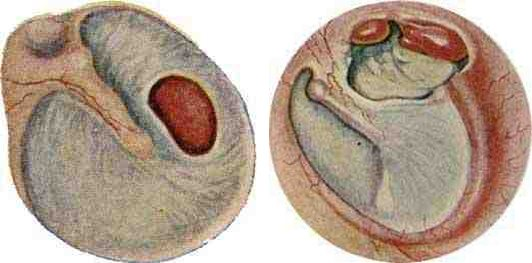

Сверка с PDF рубрикатора выполняется…
Хронический средний отит
Клинические рекомендации от 29.10.2024 · взрослые и дети
Основные положения
- Основной метод лечения хронического гнойного среднего отита хирургический; каждый пациент рассматривается как потенциальный кандидат на операцию. Оперируют в период ремиссии, не ранее чем через 3–6 месяцев после последнего обострения.
- Всем пациентам выполняют тональную пороговую аудиометрию: она определяет степень и вид тугоухости и позволяет прогнозировать результат операции. При порогах костной проводимости выше 30 дБ в диапазоне разговорных частот качественного улучшения слуха не следует ожидать даже после безупречно выполненной операции.
- При подозрении на холестеатому или её рецидив показана магнитно-резонансная томография (МРТ) височных костей: в режимах T1, T2 и диффузионно-взвешенных изображений метод позволяет отличить холестеатому от секрета, грануляций и холестероловой гранулемы.
- В консервативном лечении основная роль принадлежит местным средствам: антисептикам, ушным каплям с противомикробными препаратами и кортикостероидами. Топические фторхинолоны не обладают ототоксичностью и допустимы при перфорации барабанной перепонки. Местное лечение эффективно только после тщательного удаления содержимого из среднего уха аспирацией или промыванием.
- Экстренная госпитализация показана при обострении ХГСО с внечерепными или внутричерепными осложнениями; плановая — для операции в стадии вялотекущего воспаления или ремиссии не менее 3–6 месяцев.
- Диспансерное наблюдение:
- неоперированные пациенты: раз в 6 месяцев;
- после тимпанопластики или санирующей операции: ежегодно не менее 5 лет.
Цель: своевременно выявить рецидив перфорации, холестеатомы и тугоухости.
Клиническая картина и классификация
Определение
Хронический гнойный средний отит (ХГСО) характеризуется хроническим воспалением полостей среднего уха со стойкой перфорацией барабанной перепонки, постоянным или периодическим гноетечением из уха и прогрессирующим снижением слуха на протяжении более 3 месяцев.
Мукозитом называется хроническое катаральное воспаление слизистой оболочки среднего уха. Тимпаносклероз является необратимым исходом неспецифического воспаления и сопровождается тугоухостью вследствие фиксации звукопроводящей цепи. Тимпанофиброз представляет собой незавершённый процесс, при котором в барабанной полости фиброзирование преобладает над воспалением. Холестеатома является белесовато-перламутровым эпидермальным образованием с оболочкой (матриксом), покрытой многослойным плоским эпителием; матрикс плотно прилежит к кости и нередко врастает в неё.
Этиология
- хроническая патология полости носа, околоносовых пазух и носоглотки;
- перенесённые ранее острые средние отиты;
- системная и специфическая патология.
- перенесённый острый средний отит, после которого сохраняется стойкая перфорация барабанной перепонки или ретракция с атрофичной неомембраной;
- травматическая или ятрогенная перфорация, сохраняющаяся у 1,3–10,8% пациентов после врачебных манипуляций.
Хронизации процесса способствуют анатомические особенности среднего уха и слуховой трубы, неадекватная антибактериальная терапия острого отита без дренирования среднего уха, устойчивые штаммы возбудителей, ретракция после острого отита, экссудативный средний отит, снижение местной иммунной защиты, а также заболевания носоглотки и полости носа, нарушающие мукоцилиарный клиренс слуховой трубы.
Ведущим возбудителем среди аэробов является синегнойная палочка (Pseudomonas aeruginosa), второе место по значимости занимает золотистый стафилококк. Из анаэробов чаще высеваются пептококки и пептострептококки, реже бактероиды; анаэробная флора чаще сопутствует холестеатоме. В 1,4–20% случаев выявляется грибковая флора, как правило Aspergillus и Candida.
Классификация
- мезотимпанит (туботимпанальный отит): поражается преимущественно слизистая оболочка мезо- и гипотимпанума;
- эпитимпанит (эпитимпано-антральный отит): процесс распространяется из эпитимпанума на клетки сосцевидного отростка и вовлекает костные структуры среднего уха.
- экссудативный отит;
- адгезивный (рубцовый) отит;
- отит с тимпаносклерозом или тимпанофиброзом.
- сухой отит;
- отит с мукозитом;
- отит с тимпаносклерозом;
- отит с холестеатомой.
Расположение перфорации отражает лишь преимущественную локализацию воспалительного процесса и не позволяет судить об изменениях в среднем ухе: даже при мезотимпаните разрушение цепи слуховых косточек выявляется у 10–22% пациентов, а холестеатома в барабанной полости у 11,6–42%. Поэтому для планирования операции необходима диагностика этих изменений.
Некраевая (центральная, а) и краевая (б) перфорации барабанной перепонки

Классификация Европейской академии отологии и нейроотологии и Японского отологического общества (EAONO/JOS) выделяет 4 типа холестеатомы (врождённая холестеатома, холестеатома ненатянутой части, холестеатома натянутой части барабанной перепонки и вторичная холестеатома при перфорации натянутой части) и 4 стадии: 1-я стадия соответствует поражению одного региона, 2-я стадия поражению двух и более регионов, 3-я стадия наличию внечерепного осложнения, 4-я стадия наличию внутричерепного осложнения. Регионы обозначаются по системе STAM: труднодоступные зоны (надтубарный и тимпанальный синусы), барабанная полость, аттик и сосцевидный отросток.
Клиническая картина
Пациенты предъявляют жалобы на снижение слуха и шум в ухе; при отоскопии определяется перфорация барабанной перепонки с отделяемым или холестеатомой.
Мезотимпанит: перфорация в натянутой части барабанной перепонки. Форма относительно благоприятная: признаки активной остеодеструкции отсутствуют.
Хронический гнойный средний отит, мезотимпанальная форма (мезотимпанит)

Эпитимпанит: перфорация расположена в ненатянутой части барабанной перепонки. В среднем ухе развивается кариозный процесс, который может привести к лабиринтным и внутричерепным осложнениям. Разрушение кости, как правило, обусловлено холестеатомой. Начальной стадией холестеатомы считается ретракционный карман, из которого она, как правило, и развивается.
Холестеатома аттика (надбарабанного пространства), стрелка

Эпимезотимпанит сочетает признаки обеих форм.
- мезотимпанит: 48–69% больных;
- эпитимпанит: 15–19%;
- эпимезотимпанит: 17–33%;
При эпитимпаните разрушение кости обусловлено холестеатомой в 79–97% случаев; холестеатома развивается из ретракционного кармана в 80% случаев.
Скрыто: термины, факторы хронизации, возбудители, подробности классификации холестеатомы.
В учебнике: хронический гнойный средний отит и отогенные осложнения. Анатомия и физиология: наружное и среднее ухо, внутреннее ухо.
Диагностика
Диагноз устанавливается на основании совокупности жалоб, данных анамнеза, физикального обследования, лабораторных и инструментальных исследований.
Жалобы и анамнез
Необходимо уточнить наличие снижения слуха на одно или оба уха.
Снижение слуха чаще двустороннее. При длительном течении заболевания с формированием тимпаносклероза, тимпанофиброза и ретракционного кармана тугоухость становится выраженной.Следует уточнить длительность, частоту и характер выделений из уха.
Выделения из уха являются второй по значимости жалобой.
Около половины пациентов отмечают их 1–2 раза в год после переохлаждения, попадания воды в ухо или острого респираторного заболевания (ОРЗ). У почти трети в последние годы выделения частые или постоянные.
По характеру выделения различны: от скудных слизистых до гнойных с ихорозным запахом.
Необходимо уточнить наличие шума в одном или обоих ушах.
Низкочастотный шум, как правило, связан с дефектом барабанной перепонки, высокочастотный шум связан с поражением внутреннего уха. При тимпаносклерозе и тимпанофиброзе шум усиливается.Следует уточнить наличие заложенности, ощущения жидкости и дискомфорта в ухе.
Подобные жалобы чаще встречаются при сохранённой натянутой части барабанной перепонки.Необходимо выяснить, отмечались ли эпизоды головокружения в анамнезе.
Системное головокружение или неустойчивость у больных с холестеатомой возникают при обострении, нагрузке, наклонах и поворотах головы. В половине случаев эти симптомы свидетельствуют о фистуле лабиринта. При деструкции стенки канала лицевого нерва возможен его парез.Следует уточнить наличие головной боли.
- снижение слуха: 93–99% пациентов;
- выделения из уха: 76–100%;
- шум в ухе: 19–48%;
- головокружение или неустойчивость при холестеатоме: 10–27%.
Отоскопия и отоэндоскопия
- все пациенты: отоскопия или видеоотоскопия; наряду с отоэндоскопией это определяющий метод диагностики ХГСО.
- барабанную перепонку: тонкая, утолщённая, рубцовая, очаги тимпаносклероза;
- наличие и глубину ретракционных карманов;
- размер и локализацию перфорации, состояние её краёв;
- слизистую оболочку барабанной полости: мукозит, тимпаносклероз, полипы, грануляции, эпидермизация;
- доступные осмотру слуховые косточки: кариес, лизис;
- латеральную стенку аттика и адитус.
Степени мукозита по данным отоскопии
| Степень | Изменения слизистой оболочки |
|---|---|
| I | Слизистая оболочка медиальной стенки барабанной полости утолщена, свободное отделяемое отсутствует |
| II | Подушкообразное утолщение слизистой оболочки медиальной стенки с большим количеством слизистых желёз, скудное слизистое отделяемое |
| III | Выраженная полиповидная гиперплазия слизистой оболочки мезогипотимпанума, слизистое отделяемое |
При отоэндоскопии холестеатома визуализируется в 61% случаев.
Перфорация при эпитимпаните может- быть точечной;
- определяться только при продувании;
- прикрываться серной коркой;
- временно отсутствовать в период стойкой ремиссии.
В этих случаях тщательно осматривают латеральную стенку аттика, чтобы выявить даже минимальную деструкцию.
Иногда заболевание протекает под маской рецидивирующего экссудативного отита: за прозрачным экссудатом определяется холестеатомный мешок при небольшом ретракционном кармане в ненатянутой части.
Глубокие карманы осматривают эндоскопами с углом обзора 0°, 30° и 70°.
Фистульная проба и функция слуховой трубы
Распознать фистулу лабиринта позволяет фистульная проба.
Проходимость слуховой трубы оценивают пустым глотком, пробой Тойнби, приёмом Вальсальвы или продуванием баллоном Политцера.
- чем более выражен мукозит, тем хуже вентиляционная и дренажная функции слуховой трубы;
- дисфункция слуховой трубы может объяснять ретракцию барабанной перепонки до операции и в отдалённом периоде и учитывается при лечении и реабилитации;
- при нормальной функции слуховой трубы у пациента с хроническим серозным отитом следует заподозрить спонтанную отоликворею.
Осмотр полости носа и носоглотки
Необходима оценка состояния полости носа, околоносовых пазух и носоглотки: искривление перегородки носа, гипертрофический ринит, хронические заболевания околоносовых пазух и носоглотки нарушают функцию слуховых труб и снижают эффективность лечения.
Камертональные пробы
- подозрение на снижение слуха.
Тональная пороговая аудиометрия
- все пациенты с ХГСО при диагностике.
- степень и вид тугоухости: кондуктивная, смешанная или нейросенсорная;
- возможности реабилитации;
- прогноз и контроль результата операции.
При порогах костной проводимости выше 30 дБ в диапазоне разговорных частот качественного улучшения слуха не следует ожидать даже после идеально выполненной операции. Динамику предпочтительно оценивать на одном аудиометре у одного специалиста.
Для ХГСО характерна кондуктивная и смешанная тугоухость.
Степень зависит от- величины дефекта барабанной перепонки;
- целостности и подвижности цепи слуховых косточек;
- токсического воздействия воспалительного процесса на внутреннее ухо.
Глухота при ХГСО часто обусловлена фистулой лабиринта вследствие деструкции кости холестеатомой.
По данным аудиометрии холестеатому распознать невозможно: костно-воздушный интервал не коррелирует с характером разрушения цепи слуховых косточек, а холестеатома и грануляции сами могут проводить звук к внутреннему уху.Рентгенография височных костей
- ХГСО без холестеатомы: оценка сосцевидного отростка (рентгенография височных костей по Шюллеру и Майеру).
Компьютерная томография височных костей
- пациенты с ХГСО: оценка структур височных костей; метод первичной диагностики.
- распространённость процесса;
- анатомические особенности: низкое стояние дна средней черепной ямки, высокое стояние луковицы яремной вены, предлежание сигмовидного синуса, дегисценции канала лицевого нерва и лабиринта, перегородка Кёрнера;
- стенки барабанной полости и антромастоидального отдела;
- цепь слуховых косточек;
- слизистую оболочку и узкие пространства барабанной полости.
Исследование выполняют в аксиальной и коронарной проекциях с мультипланарной реконструкцией; оптимальная толщина среза 0,5–0,8 мм.
КТ выявляет признаки ХГСО в 99% случаев, деструкцию стенок среднего уха в 55–97% случаев. Дифференцировать холестеатому от фиброза, грануляций, экссудата и гноя по плотности невозможно: плотность всех этих тканей составляет от +30 до +40 HU. Заподозрить холестеатому в 88% случаев позволяют локализация образования, деструкция стенок барабанной полости, слуховых косточек и антромастоидальной области, расширение входа в антрум, разрушение латеральной стенки аттика или адитуса, дефект задней стенки наружного слухового прохода, разрушение канала лицевого нерва и фистула лабиринта, чаще горизонтального полукружного канала.
При ХГСО без холестеатомы на КТ определяются изменения слизистой оболочки, рубцы вокруг цепи слуховых косточек, в ряде случаев её дефект, чаще вследствие лизиса длинной ножки наковальни. Антрум при мезотимпаните в стадии ремиссии, как правило, пневматизирован; сосцевидный отросток в большинстве случаев компактный, склеротический.
Информативность КТ при оценке оперированного уха низкая: рубцы, грануляции и пластический аутоматериал по плотности не отличаются от холестеатомы. Заподозрить холестеатому позволяет только увеличение «подозрительного» образования в динамике.
Для объективной оценки распространённости процесса КТ проводят не ранее чем через 3–6 месяцев после обострения. КТ в период обострения приводит к необоснованному расширению объёма операции и оправдана только при осложнённом течении.
Магнитно-резонансная томография височных костей
- подозрение на холестеатому;
- подозрение на рецидив холестеатомы.
- режимы T1, T2, EPI DWI и non-EPI DWI надёжно выявляют холестеатому и её рецидив после операции: чувствительность 77–100%, специфичность 86–100%;
- холестеатома: низкий сигнал в режиме T1, высокий или промежуточный в режимах T2 и non-EPI DWI;
- на точность влияет размер холестеатомы;
- для выявления рецидива МРТ имеет преимущества перед ревизионной операцией и служит ей альтернативой.
Ряд авторов для выявления холестеатомы рекомендует сочетать или совмещать КТ и МРТ: чувствительность в этом случае составляет 96%, специфичность 100%.
Вестибулометрия
- ХГСО с холестеатомой, осложнённый фистулой лабиринта.
Общеклинические лабораторные исследования
- подготовка к плановой операции: общеклинические лабораторные исследования.
Посев отделяемого из уха на бактерии
- посев отделяемого из уха на аэробную и факультативно-анаэробную микрофлору с определением чувствительности к антимикробным препаратам.
Посев отделяемого из уха на грибы
- подозрение на грибковый процесс: посев отделяемого на дрожжевые и мицелиальные грибы.
Цитологическое и патоморфологическое исследование
- ткани, удалённые из уха.
- удалённую патологическую ткань во всех случаях направляют на патоморфологическое исследование;
- атипичное течение: спектр исследований расширяют для исключения туберкулёза и гранулематоза Вегенера;
- нет диагностических данных и стандартное лечение неэффективно: исследования повторяют через 3 месяца.
Консультации специалистов
- сопутствующие заболевания и подозрение на осложнение: консультации невролога, нейрохирурга и терапевта.
Скрыто: точность КТ, КТ при ХГСО без холестеатомы, сочетание КТ и МРТ.
Лечение
Целью лечения является санация среднего уха для достижения стойкой ремиссии и предупреждения осложнений и тугоухости.
Консервативное лечение: обострение и подготовка к операции
Консервативная терапия проводится
- при обострении;
- при подготовке к операции при неосложнённом течении.
Её применяют при обострении для достижения ремиссии перед операцией, а также в раннем периоде после санирующей операции.
Включает- бета-лактамные антибиотики;
- анальгетики;
- кортикостероиды;
- процедуры, улучшающие функцию слуховой трубы.
При неосложнённом течении лечение амбулаторное, при осложнённом — стационарное.
В качестве основного метода лечения консервативная терапия носит паллиативный характер и оправдана только у пациентов с тяжёлой сопутствующей патологией при условии регулярного наблюдения.
При сухом перфоративном среднем отите проведение какого-либо лечения не рекомендуется.
Расхождение в тексте рекомендации: в разделе 3.1 указано, что при сухом перфоративном отите лечение не проводится, тогда как в разделе 3.2 указано, что при перфорации без возможности улучшения слуха тимпанопластику следует выполнять для предупреждения рецидивов, а наилучшие результаты тимпанопластики достигаются именно при сухих перфорациях. В алгоритме (приложение Б) от сухого перфоративного отита стрелки ведут к лечению. Вероятно, запрет относится только к консервативной терапии.
Антибактериальный препарат выбирается с учётом микрофлоры, её чувствительности и способности препарата проникать через гематоэнцефалический барьер. Препаратами выбора являются бета-лактамы (пенициллины и другие бета-лактамные антибиотики), в ряде случаев респираторные фторхинолоны. Конкретные препараты и дозы в КР не приведены.
К системным препаратам прибегают, как правило, при выраженном обострении и тяжёлых распространённых деструктивных формах. Периоперационная антибиотикопрофилактика должна соответствовать характеру и объёму операции.
При смешанной микрофлоре рекомендацией предусмотрено сочетание 2–3 препаратов, например цефалоспоринов и фторхинолонов. Допускается сочетание местных противомикробных препаратов с противогрибковыми.
Основная роль принадлежит местным средствам
- антисептики;
- ушные противомикробные препараты: наиболее эффективны и безопасны топические фторхинолоны (к ним чувствительны 75,6% возбудителей, они не ототоксичны и допустимы при перфорации);
- местные противогрибковые средства;
- кортикостероиды в комбинации с противомикробными препаратами.
Местное лечение эффективно только после тщательного удаления содержимого из среднего уха аспирацией или промыванием.
Грануляции в барабанной полости по возможности удаляются или прижигаются соединениями серебра; кроме того, они хорошо регрессируют под действием топических кортикостероидов.
При грибковой флоре противомикробные препараты и кортикостероиды в каплях противопоказаны. Ведение таких пациентов осуществляется строго по алгоритмам применения местных противогрибковых средств; лечение часто длительное и требует участия миколога.
Расхождение в тексте рекомендации: абзацем выше допускается сочетание противомикробных ушных препаратов с противогрибковыми, тогда как при грибковой флоре противомикробные капли противопоказаны. Кроме того, «антибиотики для наружного применения» обозначены кодом АТХ D01A, который относится к противогрибковым препаратам.
Дисфункцию слуховой трубы устраняют поэтапно
- лечение заболеваний полости носа и носоглотки, от деконгестантов и назальных кортикостероидов до хирургического вмешательства;
- восстановление проходимости слуховой трубы продуванием по Политцеру или курсом катетеризаций с введением лекарственных препаратов;
- восстановление активного открытия и закрытия слуховой трубы гимнастикой или электростимуляцией её мышц.
Мукозит
Кортикостероиды в каплях или в составе комбинированных препаратов используют при вялотекущем воспалении слизистой оболочки (мукозите). При неэффективности местного лечения в течение 1–3 месяцев, что характерно для мукозита, показано хирургическое вмешательство с дренированием.
При ХГСО с мукозитом II и III степени выполняются дренирующие операции.
Методика определяется индивидуально с учётом формы ХГСО и распространённости процесса, анатомии височной кости, степени тугоухости, состояния слуховой трубы, наличия осложнений и опыта хирурга.- при мукозите тимпанопластика оправдана: после восстановления функции слуховой трубы и аэрации утолщённая слизистая оболочка нормализуется;
- слизистую оболочку удаляют инструментально или лазером;
- выраженный мукозит: лучше оставить дренажную трубку под меатальным лоскутом или вскрыть антрум и дренировать через него барабанную полость на срок до 2 недель.
Хирургическое лечение: общие положения и тимпанопластика
Основной метод лечения ХГСО хирургический: только операция полностью санирует ухо и улучшает качество жизни, поэтому каждого пациента рассматривают как потенциального кандидата на операцию.
Оперируют в период ремиссии, не ранее чем через 3–6 месяцев после последнего обострения: объём вмешательства меньше, операция безопаснее и эффективнее.
Вынужденное вмешательство при обострении или осложнении ограничивается санацией среднего уха открытого типа, при внутричерепных осложнениях — расширенной.
Из-за кровоточивости тканей оно технически сложно и чаще сопровождается ятрогенными осложнениями.
Поэтому пациентов с осложнениями оперируют в ургентных отделениях, а вне обострения — в специализированных отделениях и центрах, владеющих реконструктивной хирургией среднего уха.
Ранняя операция на «сухом ухе» позволяет полнее санировать очаг, сохранить слух и анатомические структуры и сократить сроки реабилитации.
Для санации среднего уха и улучшения слуха выполняется тимпанопластика.
При мезотимпаните применяют тимпанопластику различных типов (4 типа по Х. Вульштейну, 5 типов по М. Тосу) и мирингопластику в зависимости от степени разрушения цепи слуховых косточек.
Варианты тимпанопластики- протезы из хряща, наковальни, кортикальной кости, титана;
- аутоматериалы для пластики барабанной перепонки;
- доступ через наружный слуховой проход, эндауральный или заушный;
- местная анестезия или наркоз;
- под контролем эндоскопа или микроскопа;
- в один или два этапа.
Обязательное условие успешной тимпанопластики: отсутствие выделений из уха не менее 3–6 месяцев.
Результат зависит от- срока после последнего обострения;
- изменений в среднем ухе;
- локализации и размера перфорации;
- функции слуховой трубы и состояния слизистой оболочки;
- способа реконструкции;
- опыта хирурга и послеоперационного ведения.
Тимпанопластика эффективна в 43–98% случаев, риск глухоты на оперированное ухо составляет 1–2%. Наилучшие результаты (у 93,3% пациентов) достигаются при сухих перфорациях независимо от техники укладки трансплантата.
Второй этап тимпанопластики проводят через 8–12 месяцев. При перфорации без возможности улучшения слуха тимпанопластика также показана для предупреждения рецидивов ХГСО.
Мастоидотомия при тимпанопластике (или раздельная аттикоантротомия с тимпанопластикой) обоснована только при длительном вялотекущем процессе в среднем ухе.
У пациентов без холестеатомы мастоидотомия при тимпанопластике не улучшает ни анатомический результат, ни аэрацию сосцевидного отростка, но увеличивает объём и риск вмешательства. Обязательной она считается при вялотекущем хроническом перфоративном отите без холестеатомы в случае неэффективности системной и местной антибактериальной терапии.
Применение эндоскопа в дополнение к микроскопу улучшает обзор барабанной полости, однако, по данным систематического обзора, преимущества исключительно эндоскопических операций перед микроскопическими не доказаны.
При тотальных и субтотальных дефектах барабанной перепонки с изменённой слизистой оболочкой большинство хирургов для профилактики реперфорации сочетают аутофасцию, аутохрящ и кожные трансплантаты. Тонкие пластинки аутохряща препятствуют ретракции и не ухудшают акустические свойства.
Искусственные протезы и аутопротезы при оссикулопластике не различаются по слуховым результатам, однако искусственный протез без прикрытия аутохрящом смещается в 6 раз чаще.
Холестеатома
При холестеатоме эффективно местное применение препаратов борной кислоты: помимо антисептического действия, они оказывают подсушивающее действие на ткани и тем самым уменьшают воспаление.
При ХГСО с холестеатомой выполняются санирующие операции.
Основным принципом является полное удаление холестеатомы и устранение причин рецидива.При эпитимпаните и эпимезотимпаните с холестеатомой в зависимости от распространённости процесса выбирают «открытые», «полуоткрытые» или «закрытые» санирующие операции с тимпанопластикой или без неё. С учётом объёма и длительности вмешательства операции выполняют под общей анестезией.
При холестеатоме, ограниченной аттиком или аттиком и адитусом, допустима аттикотомия через наружный слуховой проход при обязательном тщательном удалении патологического процесса из синусов и карманов среднего уха.
- «открытая» техника (с удалением задней стенки наружного слухового прохода) избавляет от повторных операций, но не от регулярного ухода за полостью у оториноларинголога;
- после «закрытой» операции обязательна ревизия через 8–12 месяцев или МРТ для исключения рецидива;
- «закрытые» операции сопряжены с более высоким риском внутричерепных осложнений: при невозможности постоянного послеоперационного наблюдения предпочтительна «открытая» методика.
- «закрытые» методики (аттикоадитотомия, аттикоантротомия, раздельная антромастоидотомия): при ограниченной холестеатоме;
- «открытые» методики (модифицированная радикальная, консервативно-радикальная, общеполостная операция, антромастоидотомия с удалением задней стенки, радикальная мастоидэктомия): при распространённой деструкции, активной холестеатоме или вялотекущем обострении.
Современной тенденцией является применение «полуоткрытой» (гибридной) техники: аттикоантро- или мастоидотомии с облитерацией антрума и сосцевидного отростка аутотканями или инертными материалами и тимпанопластикой. При этом анатомия уха остаётся близкой к исходной, болезнь послеоперационной полости не развивается и необходимость в пожизненном наблюдении отсутствует.
При выявлении рецидива холестеатомы после «закрытой» операции объём вмешательства расширяется до антромастоидотомии с удалением задней стенки наружного слухового прохода и формированием открытой полости.
Послеоперационное ведение
После операции наружный слуховой проход тампонируют с противомикробными препаратами:
- после тимпанопластики на 10–14 дней;
- после санирующей операции на 14–21 день.
Дополнительно необходимо медикаментозное и физиотерапевтическое воздействие на слуховую трубу и слизистую оболочку. Важно квалифицированное наблюдение в отдалённом периоде.
Слухопротезирование
Электроакустическая реабилитация показана при асоциальном слухе (тугоухость выше II степени) и отсутствии возможности его улучшения.
Слухопротезирование показано при порогах костной проводимости выше 30 дБ на оба уха, в том числе в отдалённом послеоперационном периоде.Скрыто: сочетания антибиотиков, мастоидотомия, эндоскопия, трансплантаты, протезы, гибридная техника.
Техника операций в учебнике: санирующая общеполостная операция на височной кости, тимпанопластика.
Алгоритм действий врача при хроническом гнойном среднем отите
- 1
Пациент с подозрением на хронический гнойный средний отит (ХГСО)
Пациент жалуется на снижение слуха (93–99% случаев) и выделения из уха (76–100%), нередко на шум в ухе. Хронический гнойный средний отит характеризуется стойкой перфорацией барабанной перепонки, постоянным или периодическим гноетечением и прогрессирующим снижением слуха на протяжении более 3 месяцев.
Уточняют длительность, частоту и характер выделений, наличие головокружения и головной боли: при неосложнённом эпитимпаните боль в ухе и головная боль не характерны, а их появление, как правило, свидетельствует об осложнении.
- 2
Диагностика
Отоскопия или видеоотоскопия, наряду с отоэндоскопией, является определяющим методом диагностики. Оценивают барабанную перепонку, размер и локализацию перфорации, состояние её краёв, слизистую оболочку барабанной полости (мукозит, тимпаносклероз, полипы, грануляции), доступные осмотру слуховые косточки, латеральную стенку аттика.
Всем пациентам выполняют тональную пороговую аудиометрию: она определяет степень и вид тугоухости и прогноз операции. При подозрении на холестеатому или её рецидив показана МРТ височных костей. Оценивают также состояние полости носа, околоносовых пазух и носоглотки, проходимость слуховой трубы.
- 3
Диагноз подтверждён?
Решается, подтверждён ли хронический гнойный средний отит и какая форма заболевания у пациента: сухой перфоративный отит, отит с мукозитом, с тимпаносклерозом или с холестеатомой. Расположение перфорации отражает лишь преимущественную локализацию воспаления и не позволяет судить об изменениях в среднем ухе, поэтому для планирования операции необходима диагностика этих изменений.
Подтверждён ли диагноз и какая форма хронического гнойного среднего отита установлена?
- 4
Продолжение диагностического поиска в рамках других заболеваний
конец алгоритмаДиагноз не подтверждён: диагностический поиск продолжают в рамках других заболеваний. Следует помнить, что заболевание иногда протекает под маской рецидивирующего экссудативного отита, когда за прозрачным экссудатом определяется холестеатомный мешок при небольшом ретракционном кармане в ненатянутой части.
- 5
Сухой перфоративный средний отит
Сухой перфоративный средний отит. Раздел КР о консервативном лечении при нём лечения не рекомендует, но наилучшие результаты тимпанопластики (у 93,3% пациентов) достигаются именно при сухих перфорациях, поэтому по алгоритму КР показано хирургическое лечение.
- 6
Хирургическое лечение
Основной метод лечения хронического гнойного среднего отита хирургический: только операция полностью санирует ухо, поэтому каждого пациента рассматривают как потенциального кандидата на операцию. Оперируют в период ремиссии, не ранее чем через 3–6 месяцев после последнего обострения.
Объём вмешательства определяют форма заболевания и распространённость процесса. Выбирают тимпанопластику, санирующую операцию либо санирующую операцию с тимпано- и мастоидопластикой.
Какой объём хирургического вмешательства показан?
- 7
Тимпанопластика
Тимпанопластика направлена на санацию среднего уха и улучшение слуха. Обязательное условие успеха — отсутствие выделений из уха не менее 3–6 месяцев. Тимпанопластика эффективна в 43–98% случаев, наилучшие результаты достигаются при сухих перфорациях.
После тимпанопластики наружный слуховой проход тампонируют с противомикробными препаратами на 10–14 дней. Второй этап тимпанопластики проводят через 8–12 месяцев.
- 8
Реабилитация
После операции необходимы медикаментозное и физиотерапевтическое воздействие на слуховую трубу и слизистую оболочку. Тампоны удаляют через 2–3 недели после выписки, слух контролируют по данным тональной пороговой аудиометрии через 3 и 12 месяцев. Пациенту рекомендуют избегать физических нагрузок в течение месяца, авиаперелётов в течение 3 месяцев и защищать ухо от попадания воды.
При тугоухости выше II степени и невозможности улучшить слух показана электроакустическая реабилитация (слухопротезирование).
- 9
Диспансерное наблюдение
конец алгоритмаДиспансерное наблюдение: после тимпанопластики и санирующих операций ежегодно не менее 5 лет, у неоперированных пациентов раз в 6 месяцев. Цель наблюдения — своевременно выявить рецидив перфорации, холестеатомы и тугоухости.
- 10
Санирующая операция
При ХГСО с холестеатомой выполняют санирующие операции; основным принципом является полное удаление холестеатомы и устранение причин рецидива. Выбор методики зависит от распространённости процесса: «закрытые» методики применяют при ограниченной холестеатоме, «открытые» при распространённой деструкции, активной холестеатоме или вялотекущем обострении.
После санирующей операции наружный слуховой проход тампонируют на 14–21 день. После «закрытой» операции обязательна ревизия через 8–12 месяцев или МРТ для исключения рецидива.
- 11
Санирующая операция с тимпано- и мастоидопластикой
Современной тенденцией является «полуоткрытая» (гибридная) техника: аттикоантро- или мастоидотомия с облитерацией антрума и сосцевидного отростка аутотканями или инертными материалами и тимпанопластикой. При этом анатомия уха остаётся близкой к исходной, болезнь послеоперационной полости не развивается.
Мастоидотомия при тимпанопластике обоснована только при длительном вялотекущем процессе в среднем ухе; без холестеатомы она не улучшает результат, но увеличивает объём и риск вмешательства.
- 12
ХГСО с мукозитом I–III степени
Хронический гнойный средний отит с мукозитом I–III степени. Мукозит представляет собой хроническое катаральное воспаление слизистой оболочки среднего уха; при I степени слизистая оболочка медиальной стенки утолщена, при II подушкообразно утолщена со скудным слизистым отделяемым, при III определяется выраженная полиповидная гиперплазия.
Применяют кортикостероиды в каплях или в составе комбинированных препаратов. При неэффективности местного лечения в течение 1–3 месяцев показано хирургическое вмешательство с дренированием.
С какого метода лечения начинать при мукозите?
- 13
Консервативное лечение
Консервативную терапию проводят при обострении и при подготовке к операции при неосложнённом течении, амбулаторно. Основная роль принадлежит местным средствам: антисептикам, ушным каплям с противомикробными препаратами и кортикостероидами; наиболее эффективны и безопасны топические фторхинолоны, они допустимы при перфорации. Местное лечение эффективно только после тщательного удаления содержимого из среднего уха аспирацией или промыванием.
Системные антибиотики, прежде всего бета-лактамы, применяют при выраженном обострении и тяжёлых деструктивных формах. Как основной метод лечения консервативная терапия носит паллиативный характер.
Что показано после консервативного лечения?
- 14
ХГСО с тимпаносклерозом
Хронический гнойный средний отит с тимпаносклерозом. Тимпаносклероз является необратимым исходом неспецифического воспаления и сопровождается тугоухостью вследствие фиксации звукопроводящей цепи, поэтому основным методом лечения остаётся хирургический.
- 15
ХГСО с холестеатомой
Хронический гнойный средний отит с холестеатомой. Гнойное отделяемое с неприятным запахом характерно для холестеатомы; при эпитимпаните деструкция кости в 79–97% случаев обусловлена именно ею. При холестеатоме местно эффективны препараты борной кислоты, но основным методом лечения являются санирующие операции.
Какой метод лечения выбрать при холестеатоме?
Профилактика и диспансерное наблюдение. Показания к госпитализации
Пациенты, которым операция противопоказана или отложена, а также отказавшиеся от неё, наблюдаются в поликлинике раз в 6 месяцев; при обострении применяют консервативное лечение.
После тимпанопластики и санирующих операций пациента осматривают ежегодно не менее 5 лет врач поликлиники и отохирург клиники, где выполнялась операция. Цель: своевременно выявить рецидив перфорации, холестеатомы и тугоухости.
- санация полости носа и носоглотки;
- разъяснение пациенту характера заболевания;
- защита уха от попадания воды, предупреждение обострений при ОРЗ;
- своевременное обращение к врачу поликлиники и в клинику, где выполнялась операция.
- постельный режим с положением на противоположном ухе (в зависимости от методики);
- избегать физических нагрузок в течение месяца;
- избегать авиаперелётов в течение 3 месяцев;
- защищать ухо от попадания воды до завершения реабилитации.
Показания к госпитализации и выписке
Первичный осмотр пациента выполняют оториноларинголог и сурдолог-оториноларинголог.
- обострение ХГСО с внечерепными или внутричерепными осложнениями.
Плановая госпитализация для операции при ХГСО, в том числе с холестеатомой, в стадии вялотекущего воспаления или ремиссии не менее 3–6 месяцев. Показания:
- снижение слуха с шумом в ухе;
- снижение слуха со скудным отделяемым, не купирующимся консервативной терапией;
- любые клинические проявления ХГСО независимо от вида тугоухости при отсутствии общих противопоказаний и при условии обследования пациента в соответствии с требованиями стационара.
- после экстренной госпитализации: при отсутствии угрозы жизни и восстановлении жизнедеятельности;
- после плановой: в зависимости от объёма операции и самочувствия, на 3–5-е сутки после завершения противовоспалительной и симптоматической терапии, с тампонами в наружном слуховом проходе.
- удаление тампонов через 2–3 недели;
- контроль слуха по данным ТПА через 3 и 12 месяцев.
Эффективность лечения оценивается по жалобам на снижение слуха и выделения из уха, по данным отоэндоскопии (закрытие перфорации, отсутствие отореи, эпидермизация полости), ТПА, КТ или МРТ (санация уха, отсутствие деструкции и холестеатомы), а также по данным вестибулометрии при фистуле лабиринта.
- прогрессирующая тугоухость;
- лабиринтит;
- периферический парез лицевого нерва;
- менингит;
- абсцесс мозга;
- тромбоз сигмовидного синуса.
Скрыто: как оценивать эффективность лечения.
Коды МКБ-10
Источник и актуальность
Журнал сверки
Неточности и противоречия в тексте рекомендации
- При сухом перфоративном среднем отите раздел 3.1 исключает любое лечение, тогда как раздел 3.2 и алгоритм в приложении Б предусматривают при перфорации тимпанопластику.
- Сочетание противомикробных ушных препаратов с противогрибковыми допускается, однако при грибковой флоре противомикробные капли противопоказаны; «антибиотики для наружного применения» обозначены кодом противогрибковых препаратов D01A.
- Сроки тампонады после операции различаются: в разделе 3.2 указано 10–14 дней после тимпанопластики и 14–21 день после санирующей операции, в разделе 6 указано удаление тампонов через 2–3 недели.
- Название и коды МКБ охватывают и негнойные формы (H65.2–H65.4), однако определение и весь текст рекомендации посвящены только хроническому гнойному среднему отиту.